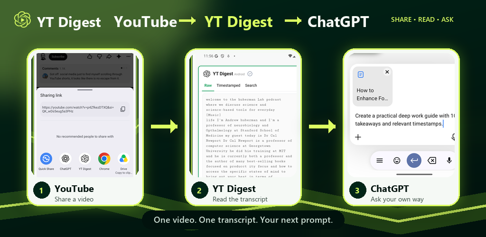
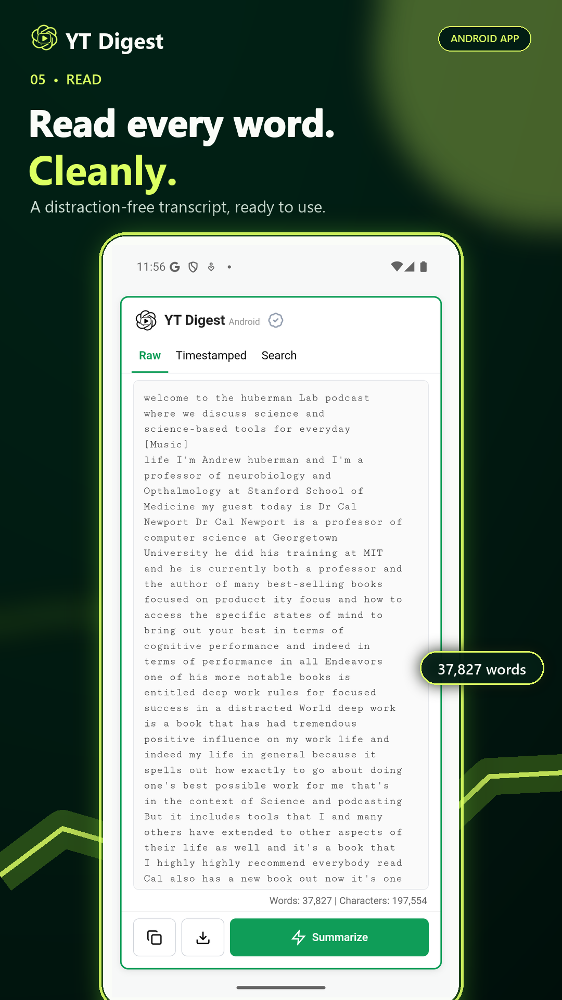
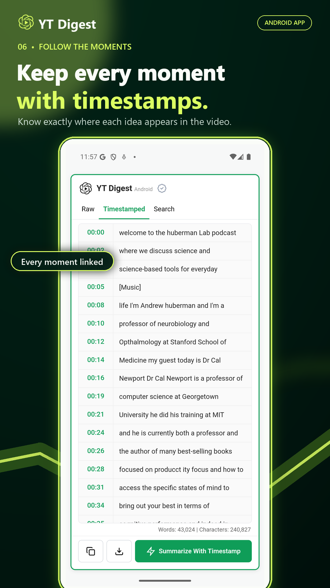
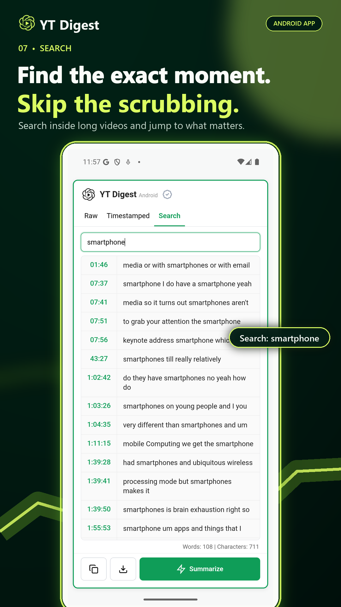

Share from YouTube
Tap Share on a YouTube video and choose YT Digest.
YT Digest for Android
YT Digest is a YouTube transcription-to-ChatGPT app for Android. Share a video, read or search its available transcript, then take it to ChatGPT for an AI summary or questions of your own.
No API key · No YT Digest account · Android 7.0 and later

Three simple steps
Tap Share on a YouTube video and choose YT Digest.
YT Digest opens the video and loads its available captions into a clean reading view.
Tap Summarize to open ChatGPT with the transcript attached and write the prompt you want.
YouTube transcription to ChatGPT
YT Digest turns available YouTube captions into a transcript you can read, search, copy, or download. Use the timestamped view to return to a specific moment in the video.
When you want a YouTube AI summary, YT Digest prepares the transcript for ChatGPT. You choose the prompt and continue in the ChatGPT Android app.
Built for long videos
Switch between a clean transcript, timestamped lines, and search results. Copy the text or save it when you need a reference.



Clear privacy
YT Digest does not require an account or API key. Read the Android privacy policy for details about analytics and advertising.
One video. One transcript. Your next prompt.
Works with YouTube videos that have available captions.